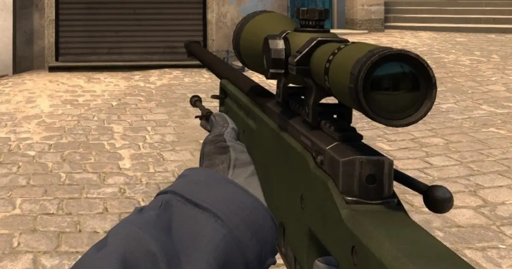
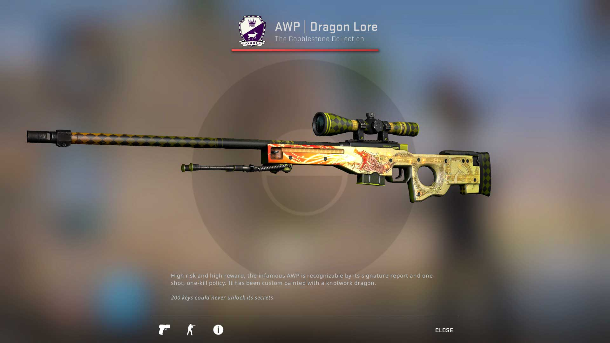

AWP |
 |
The AWP (Arctic Warfare Police) is one of the most iconic and powerful sniper rifles in CS . Renowned for its high damage output, the AWP is capable of killing an enemy with a single shot to the chest or head. This makes it a formidable weapon in the hands of skilled players. However, it has a slower rate of fire and is relatively expensive, making it a high-risk, high-reward choice. The AWP is often used to hold long sightlines and can be particularly effective in maps with open spaces. Its distinctive sound and visual impact make it a fearsome presence on the battlefield.

Back to List